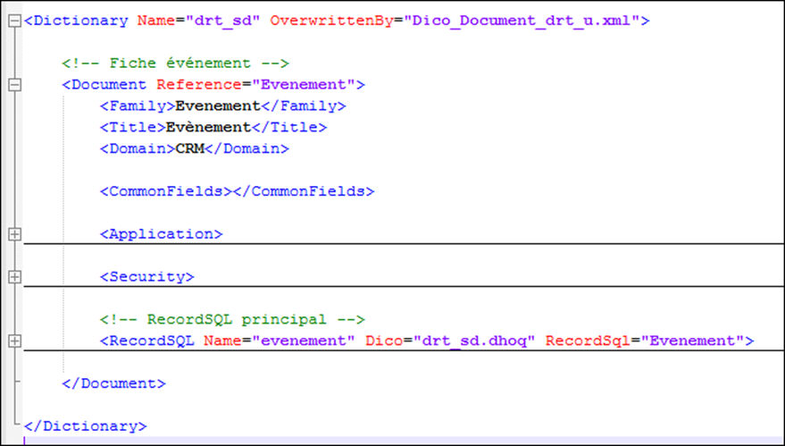

La description d’un document s’effectue en xml dans un dictionnaire de descriptions de documents.
Le dictionnaire peut être surchargé par l’attribut Overwrittenby afin d’ajouter des fields à des documents existants.
Chaque document est décrit dans une balise <Document>. L’attribut Reference donne une référence unique au document dans tout le dictionnaire
<Document Reference="Evenement">
La description d’un document comporte plusieurs sections dont certaines facultatives.

Le fichier /divalto/search/xsd/SearchDico.xsd contient la description formelle du fichier de description des documents. Il est utilisé pour vérifier la syntaxe de la description.
L'éditeur de Microsoft Visual Studio propose une assistance à la saisie de fichier .xml si le fichier .xsd correspondant existe.
L'éditeur Notepad++ colorise les balises afin de faciliter la lecture (et l'écriture du code xml).